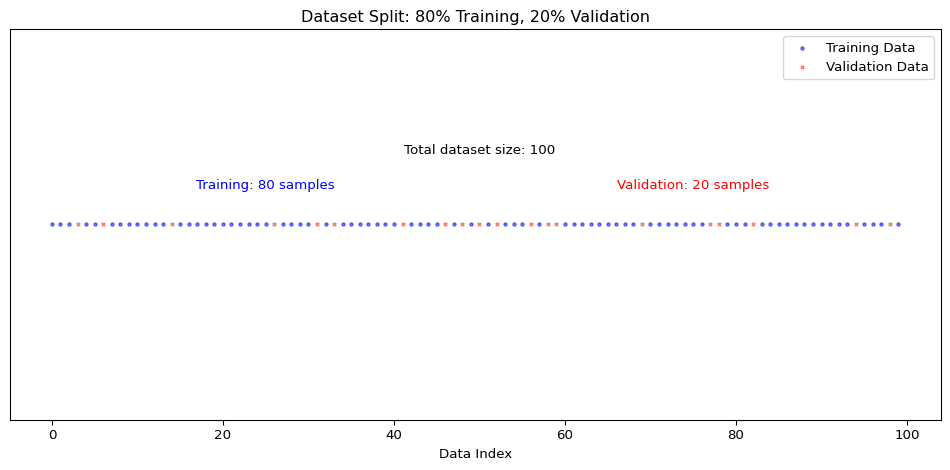
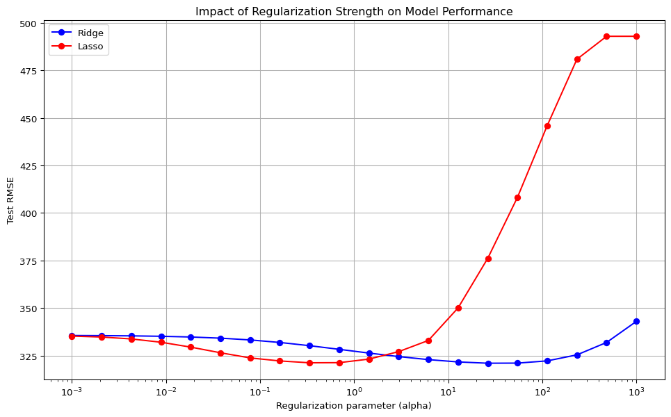
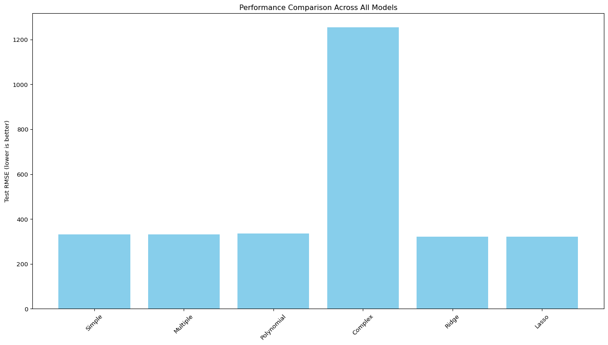
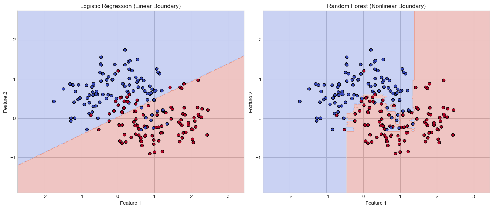
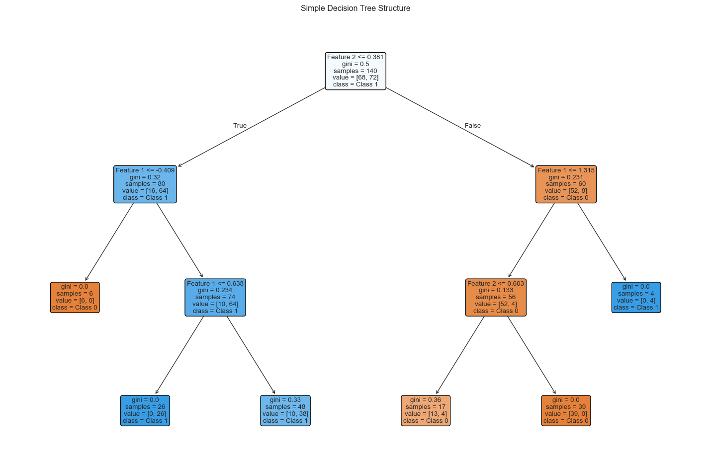
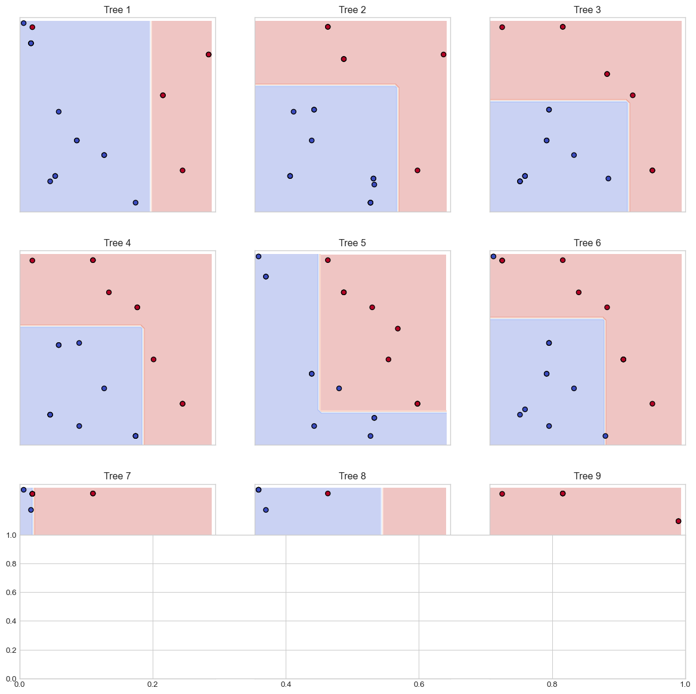
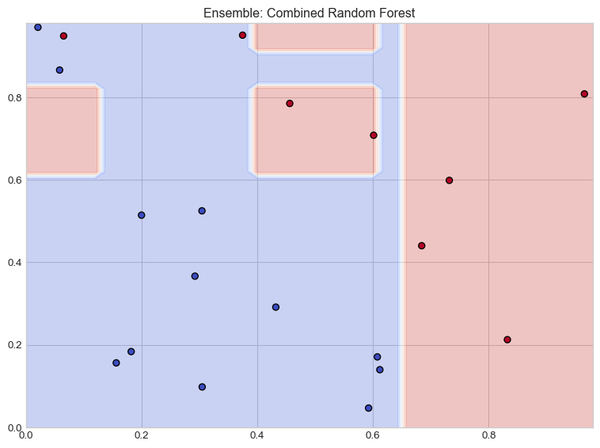
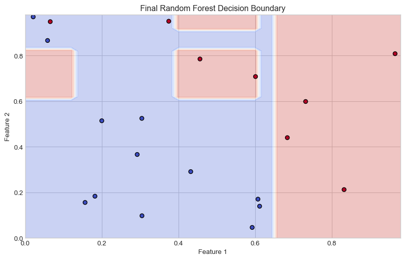

This document introduces fundamental machine learning concepts, including regression models, evaluation methods, and regularization techniques (ridge and lasso). We’ll use Python with scikit-learn to implement these concepts effectively.
Throughout this lecture, we’ll illustrate key machine learning principles using the Italian employee dataset,, rfl2019.csv which provides information on employment conditions and personal characteristics of Italian workers. We will then cover classification using the Heart Disease dataset from UCI.
The Italian Employee Dataset
The dataset we’ll use for our regression examples contains information about Italian employees from 2019, including:
retric: Monthly wage in euros (our target variable)
In supervised learning, we assume a relationship exists between a target (response) variable Y and a set of predictors (features) \(X_1, X_2, \dots, X_p\).
This relationship can be expressed mathematically as:
\[
Y = f(X) + \epsilon
\]
Where: - \(f(X)\) is an unknown function linking the predictors to \(Y\) - \(\epsilon\) is the error term (the part of \(Y\) that cannot be explained by \(X\))
Our primary goal is to estimate the function \(f\) (denoted as \(\hat{f}\)) to make predictions about \(Y\) using the predictors \(X\). Once we have determined \(\hat{f}\), we can predict \(Y\) for new observations:
\[
\hat{Y} = \hat{f}(X^{new})
\]
The exact form of \(\hat{f}\) is often less important than its ability to make accurate predictions.
Types of Supervised Learning Problems
Regression: When the target variable is continuous (e.g., predicting wages, house prices)
Classification: When the target variable is categorical (e.g., predicting disease presence, spam detection)
For our wage prediction example, we’ll use regression techniques since wages are continuous values.
Training and Validation Sets
In typical machine learning applications, we’re concerned with making predictions on new, unseen data. This presents a fundamental challenge: how do we evaluate model performance when applying it to new data where we only know the predictors (\(X\)) but not the target values (\(Y\))?
To address this issue, we use a technique called data splitting. We divide our available dataset (which contains both \(X\) and \(Y\)) into two separate sets:
Training set: Used to train the model (estimate model parameters)
Validation set: Used to evaluate the model’s performance
This splitting approach allows us to simulate the real-world scenario where we’ll apply our model to new data. The validation set acts as a proxy for future unseen data, helping us assess how well our model generalizes beyond the data it was trained on.

# Set a random seed for reproducibilitynp.random.seed(42)# Define X (predictors) and y (target)X = rfl2019[['etam']] # Using age as our only predictor for simple linear regressiony = rfl2019['retric'] # Our target variable is wage# Split theta: 80% for training, 20% for validationX_train, X_validation, y_train, y_validation = train_test_split( X, y, test_size=0.2, random_state=42)# Print the shapes to confirm the splitprint(f"X_train shape: {X_train.shape}")print(f"y_train shape: {y_train.shape}")print(f"X_validation shape: {X_validation.shape}")print(f"y_validation shape: {y_validation.shape}")
Now we’ll use the training dataset to build our first machine learning model: a simple linear regression. This model assumes a linear relationship between age and wage:
Where: - \(\beta_0\) is the intercept (expected wage when age = 0) - \(\beta_1\) is the coefficient for age (expected increase in wage for each additional year) - \(\epsilon\) is the error term
# Create and train the modellm1 = LinearRegression()lm1.fit(X_train, y_train)# Extract the model coefficientsintercept = lm1.intercept_coefficient = lm1.coef_[0]print(f"Estimated model: retric = {intercept:.2f} + {coefficient:.2f} × etam")# Visualize the fitted line against the training dataplt.figure(figsize=(10, 6))plt.scatter(X_train, y_train, alpha=0.4, label='Training data')plt.plot( [X_train.min(), X_train.max()], [lm1.predict(pd.DataFrame([X_train.min()], columns=['etam']))[0], lm1.predict(pd.DataFrame([X_train.max()], columns=['etam']))[0]], 'r-', linewidth=2, label='Fitted line')plt.xlabel('etam')plt.ylabel('retric')plt.title('Simple Linear Regression: Wage vs. Age')plt.legend()plt.grid(True, alpha=0.3)plt.show()
Looking at the performance metrics and plots, we can evaluate how well our simple linear regression model captures the relationship between age and wage:
Training vs. Validation Performance: Comparing the metrics between training and validation data helps us detect if we’re overfitting/undefitting. Similar performance on both sets suggests the model generalizes well.
R² Value: The coefficient of determination tells us what proportion of the variance in wage is explained by age. A low R² suggests that age alone is not sufficient to predict wages accurately.
Residual Plots: Patterns in residuals can reveal limitations in our model. Ideally, residuals should be randomly distributed around zero with no clear pattern.
Our simple model using only age as a predictor likely shows limited predictive power. This is expected since many other factors influence a person’s wage, such as education, experience, industry, and location. In the next sections, we’ll explore how to improve our predictions by incorporating more variables and using more sophisticated modeling techniques.
Multiple Linear Regression
In practice, predictions are rarely based on a single factor. We can easily multiple predictors:
# Prepare categorical and numerical featurescategorical_features = ['edulev', 'reg', 'sg11', 'qualifica', 'stacim']numerical_features = ['etam', 'orelav']# Create preprocessor for mixed data typespreprocessor = ColumnTransformer( transformers=[ ('num', StandardScaler(), numerical_features), ('cat', OneHotEncoder(drop='first', sparse_output=False), categorical_features) ])# Create pipeline with preprocessing and modelmodel = Pipeline([ ('preprocessor', preprocessor), ('regressor', LinearRegression(copy_X=False))])# Prepare X and yX = rfl2019[numerical_features + categorical_features]y = rfl2019['retric']# Split the data# Note: using the same random state guarantees that we get # the sampe osswervations in the training and in the validation example as in the previous example.X_train, X_test, y_train, y_test = train_test_split(X, y, test_size=0.2, random_state=42)# Train the modelmodel.fit(X_train, y_train)# Make predictionsy_train_pred = model.predict(X_train)y_test_pred = model.predict(X_test)# Calculate metricstrain_mse = mean_squared_error(y_train, y_train_pred)train_rmse = np.sqrt(train_mse)train_r2 = r2_score(y_train, y_train_pred)test_mse = mean_squared_error(y_test, y_test_pred)test_rmse = np.sqrt(test_mse)test_r2 = r2_score(y_test, y_test_pred)print("\nMultiple Linear Regression Results")print("\nIn-sample (Training) Metrics:")print(f"MSE: {train_mse:.2f}")print(f"RMSE: {train_rmse:.2f}")print(f"R²: {train_r2:.2f}")print("\nOut-of-sample (Testing) Metrics:")print(f"MSE: {test_mse:.2f}")print(f"RMSE: {test_rmse:.2f}")print(f"R²: {test_r2:.2f}")# Visualize actual vs. predicted valuesplt.figure(figsize=(10, 6))plt.scatter(y_test, y_test_pred, alpha=0.5)plt.plot([y_test.min(), y_test.max()], [y_test.min(), y_test.max()], 'r--')plt.xlabel('Actual Wages')plt.ylabel('Predicted Wages')plt.title('Actual vs. Predicted Wages (Multiple Linear Regression)')plt.show()
Linear models assume linear relationships between features and the target. However, in many real-world scenarios, relationships are non-linear. We can capture non-linearities by including polynomial terms.
For instance, the relationship between age and wage might not be linear—wages often increase more rapidly during mid-career years before plateauing.
We can make the model accomodate non-linearities with polynomial terms:
As we increase model complexity by adding more features or polynomial terms, we risk overfitting —- a situation where the model performs well on training data but fails to generalize to new data.
Signs of overfitting include:
Training metrics much better than testing metrics
Testing performance deteriorates as model complexity increases
Very large coefficient values
Illustration of Overfitting
We create an interaction-heavy model to demonstrate overfitting:
You should be able to observe that the complex model performs exceptionally well on training data but poorly on test data—a classic sign of overfitting.
Regularization: Preventing Overfitting
Regularization techniques help prevent overfitting by adding penalty terms to the model’s objective function, which discourage complex models with large coefficients.
Regularized Models Results
Ridge Regression (L2):
Test MSE: 123754.76
Test RMSE: 351.79
Test R²: 0.49
Lasso Regression (L1):
Test MSE: 105907.35
Test RMSE: 325.43
Test R²: 0.56
Tuning the Regularization Parameter
The regularization parameter (λ or alpha) controls the trade-off between model complexity and training data fit. Let’s find the optimal value:
from sklearn.model_selection import GridSearchCV# Define parameter gridparam_grid = {'regressor__alpha': np.logspace(-3, 3, 20)}# Set up Grid Search for Ridgeridge_grid = GridSearchCV( Pipeline([ ('preprocessor', preprocessor), ('poly', PolynomialFeatures(degree=2, include_bias=False)), ('regressor', Ridge(copy_X=False)) ]), param_grid, cv=5, scoring='neg_mean_squared_error')# Train the modelridge_grid.fit(X_train, y_train)# Best parameters and scoreprint(f"Best alpha for Ridge: {ridge_grid.best_params_['regressor__alpha']:.4f}")print(f"Best CV score for Ridge: {-ridge_grid.best_score_:.2f} (MSE)")# Set up Grid Search for Lassolasso_grid = GridSearchCV( Pipeline([ ('preprocessor', preprocessor), ('poly', PolynomialFeatures(degree=2, include_bias=False)), ('regressor', Lasso(max_iter=10000, copy_X=False)) ]), param_grid, cv=5, scoring='neg_mean_squared_error')# Train the modellasso_grid.fit(X_train, y_train)# Best parameters and scoreprint(f"Best alpha for Lasso: {lasso_grid.best_params_['regressor__alpha']:.4f}")print(f"Best CV score for Lasso: {-lasso_grid.best_score_:.2f} (MSE)")# Visualize regularization pathalphas = np.logspace(-3, 3, 20)ridge_rmses = []lasso_rmses = []for alpha in alphas:# Ridge ridge = Pipeline([ ('preprocessor', preprocessor), ('poly', PolynomialFeatures(degree=2, include_bias=False)), ('regressor', Ridge(alpha=alpha)) ]) ridge.fit(X_train, y_train) y_pred = ridge.predict(X_test) ridge_rmses.append(np.sqrt(mean_squared_error(y_test, y_pred)))# Lasso lasso = Pipeline([ ('preprocessor', preprocessor), ('poly', PolynomialFeatures(degree=2, include_bias=False)), ('regressor', Lasso(alpha=alpha, max_iter=10000)) ]) lasso.fit(X_train, y_train) y_pred = lasso.predict(X_test) lasso_rmses.append(np.sqrt(mean_squared_error(y_test, y_pred)))# Plot the resultsplt.figure(figsize=(12, 7))plt.plot(alphas, ridge_rmses, 'bo-', label='Ridge')plt.plot(alphas, lasso_rmses, 'ro-', label='Lasso')plt.xscale('log')plt.xlabel('Regularization parameter (alpha)')plt.ylabel('Test RMSE')plt.title('Impact of Regularization Strength on Model Performance')plt.legend()plt.grid(True)plt.show()# Use the best models for final predictionbest_ridge = ridge_grid.best_estimator_best_lasso = lasso_grid.best_estimator_y_pred_ridge = best_ridge.predict(X_test)y_pred_lasso = best_lasso.predict(X_test)# Compare all modelsmodels = ['Simple', 'Multiple', 'Polynomial', 'Complex', 'Ridge', 'Lasso']test_rmses = [ test_rmse, test_rmse, test_poly_rmse, test_complex_rmse, np.sqrt(mean_squared_error(y_test, y_pred_ridge)), np.sqrt(mean_squared_error(y_test, y_pred_lasso))]plt.figure(figsize=(14, 8))plt.bar(models, test_rmses, color='skyblue')plt.ylabel('Test RMSE (lower is better)')plt.title('Performance Comparison Across All Models')plt.xticks(rotation=45)plt.tight_layout()plt.show()
Best alpha for Ridge: 54.5559
Best CV score for Ridge: 110820.65 (MSE)
Best alpha for Lasso: 0.6952
Best CV score for Lasso: 109789.50 (MSE)


Classification Example: Heart Disease Prediction
Now let’s shift our focus to classification with the Heart Disease dataset.
Dataset Description
The Heart Disease dataset contains medical attributes that help predict whether a patient has heart disease:
False Positive (FP): Healthy patients incorrectly diagnosed with heart disease
False Negative (FN): Patients with heart disease incorrectly classified as healthy
True Positive (TP): Correctly identified patients with heart disease
Note
In the medical context, false negatives (missed diagnoses) can be particularly dangerous as patients with heart disease might not receive needed treatment.
Precision
Precision answers the question: “Of all patients we diagnosed with heart disease, what percentage actually have it?”
Clinical Meaning: High precision means we minimize false alarms (FP). This is important for reducing unnecessary anxiety, additional testing, and treatments for patients who are actually healthy.
Recall (Sensitivity)
Recall answers the question: “Of all patients who truly have heart disease, what percentage did we correctly identify?”
Clinical Meaning: High recall means we catch most actual cases of heart disease. This is critical for ensuring patients who need treatment receive it, potentially saving lives.
Important
In cardiac diagnostics, recall is often prioritized over precision because missing a case of heart disease (false negative) could be life-threatening.
Example from the Heart Disease Model
Let’s examine a sample confusion matrix from our heart disease classification model:
Figure 3: Visualization of precision-recall tradeoffs in cardiac diagnostics
The trade-offs for heart disease detection:
High Precision, Lower Recall: We might miss some cases of heart disease (more FNs), but those we diagnose are very likely to have the condition. This approach could be dangerous as missed cases might lead to untreated heart disease.
High Recall, Lower Precision: We catch most cases of heart disease (fewer FNs), but might incorrectly diagnose some healthy patients (more FPs). This approach ensures most at-risk patients are identified but might lead to unnecessary treatments.
Tip
For heart disease detection, clinicians typically prioritize high recall (sensitivity) to ensure all potentially life-threatening conditions are detected, even at the cost of some false positives that can be ruled out with additional testing.
The F1 Score: Balancing Precision and Recall
The F1 score provides a single metric that balances both precision and recall:
This balanced score helps evaluate our model’s overall effectiveness in the critical task of heart disease detection.
Implications for Model Selection
When selecting a machine learning model for heart disease detection, we should consider:
Model Threshold Adjustment: Lowering the classification threshold increases recall at the expense of precision
Cost-Sensitive Learning: Using asymmetric misclassification costs that penalize false negatives more heavily than false positives
Ensemble Methods: Combining multiple models to improve overall detection performance
import pandas as pdfrom IPython.display import display# Sample comparison data (replace with your actual results)models = ['Logistic Regression', 'Random Forest', 'Gradient Boosting', 'Neural Network']precision_values = [0.88, 0.92, 0.85, 0.90]recall_values = [0.81, 0.76, 0.89, 0.83]f1_values = [0.84, 0.83, 0.87, 0.86]# Create a comparison tablecomparison_df = pd.DataFrame({'Model': models,'Precision': precision_values,'Recall': recall_values,'F1 Score': f1_values})display(comparison_df)
Table 1: Comparison of classification models for heart disease detection
Model
Precision
Recall
F1 Score
0
Logistic Regression
0.88
0.81
0.84
1
Random Forest
0.92
0.76
0.83
2
Gradient Boosting
0.85
0.89
0.87
3
Neural Network
0.90
0.83
0.86
From Linear to Nonlinear Classification
In our previous sections, we explored linear models for regression (predicting wages) and classification (logistic regression for heart disease). While these models provide interpretable solutions, they have a fundamental limitation: they can only represent linear decision boundaries.
The Limitations of Linear Boundaries
Linear models like logistic regression separate classes with a straight line (in 2D), a plane (in 3D), or a hyperplane (in higher dimensions). When the true relationship between features and the target is nonlinear, these models cannot capture the underlying pattern accurately.
from sklearn.tree import DecisionTreeClassifier, plot_treefrom sklearn.ensemble import RandomForestClassifierfrom sklearn.datasets import make_moonsfrom sklearn.model_selection import train_test_splitfrom sklearn.metrics import accuracy_score, roc_curve, auc# Set stylingplt.style.use('seaborn-v0_8-whitegrid')# Generate a nonlinear datasetX, y = make_moons(n_samples=200, noise=0.3, random_state=42)# Split the dataX_train, X_test, y_train, y_test = train_test_split(X, y, test_size=0.3, random_state=42)# Fit a logistic regression modelfrom sklearn.linear_model import LogisticRegressionlr = LogisticRegression()lr.fit(X_train, y_train)# Create a meshgrid for plotting decision boundariesh =0.02# step size in the meshx_min, x_max = X[:, 0].min() -1, X[:, 0].max() +1y_min, y_max = X[:, 1].min() -1, X[:, 1].max() +1xx, yy = np.meshgrid(np.arange(x_min, x_max, h), np.arange(y_min, y_max, h))# Create subplotsfig, axes = plt.subplots(1, 2, figsize=(14, 6))# Plot logistic regression boundaryZ = lr.predict(np.c_[xx.ravel(), yy.ravel()])Z = Z.reshape(xx.shape)axes[0].contourf(xx, yy, Z, alpha=0.3, cmap=plt.cm.coolwarm)axes[0].scatter(X[:, 0], X[:, 1], c=y, cmap=plt.cm.coolwarm, edgecolors='k')axes[0].set_title('Logistic Regression (Linear Boundary)')axes[0].set_xlabel('Feature 1')axes[0].set_ylabel('Feature 2')# Fit a random forest and plot its boundaryrf = RandomForestClassifier(n_estimators=100, random_state=42)rf.fit(X_train, y_train)Z_rf = rf.predict(np.c_[xx.ravel(), yy.ravel()])Z_rf = Z_rf.reshape(xx.shape)axes[1].contourf(xx, yy, Z_rf, alpha=0.3, cmap=plt.cm.coolwarm)axes[1].scatter(X[:, 0], X[:, 1], c=y, cmap=plt.cm.coolwarm, edgecolors='k')axes[1].set_title('Random Forest (Nonlinear Boundary)')axes[1].set_xlabel('Feature 1')axes[1].set_ylabel('Feature 2')plt.tight_layout()plt.show()# Print accuracieslr_acc = lr.score(X_test, y_test)rf_acc = rf.score(X_test, y_test)print(f"Logistic Regression Accuracy: {lr_acc:.4f}")print(f"Random Forest Accuracy: {rf_acc:.4f}")

Figure 4: Linear models vs. nonlinear reality: A comparison of decision boundaries
Logistic Regression Accuracy: 0.8500
Random Forest Accuracy: 0.9000
As shown in the figure, the logistic regression model attempts to separate the classes with a single line, while the random forest can capture the nonlinear relationship that more accurately represents the true pattern in the data.
Decision Trees: The Building Blocks
Before understanding random forests, we need to understand decision trees, which are the foundation of tree-based ensemble methods.
How Decision Trees Work
A decision tree recursively partitions the feature space into regions, making decisions at each node based on feature values:
Root Node: The starting point that considers all training samples
Internal Nodes: Decision points that split data based on feature thresholds
Leaf Nodes: Terminal nodes that assign class labels
The algorithm identifies the feature and threshold at each node that best separates the data according to a criterion such as Gini impurity or entropy.
# Create a simpler tree for visualizationsmall_tree = DecisionTreeClassifier(max_depth=3, random_state=42)small_tree.fit(X_train, y_train)plt.figure(figsize=(15, 10))plot_tree(small_tree, filled=True, feature_names=['Feature 1', 'Feature 2'], class_names=['Class 0', 'Class 1'], rounded=True, fontsize=10)plt.title('Simple Decision Tree Structure')plt.tight_layout()plt.show()

Figure 5: Visualization of a simple decision tree for heart disease classification
Nonlinearity in Decision Trees
Decision trees naturally capture nonlinear patterns because:
Hierarchical Structure: Combinations of these splits form complex, nonlinear decision boundaries
Automatic Feature Interaction: Trees inherently model interactions between features through their hierarchical structure
While individual decision trees capture nonlinearity well, they often suffer from high variance (overfitting). Random forests address this weakness through ensemble learning.
The Random Forest Algorithm
A random forest is an ensemble of decision trees that follow these principles:
Bootstrap Aggregating (Bagging): Each tree is trained on a random subset of the training data, sampled with replacement
Feature Randomization: At each split, only a random subset of features is considered
Voting Mechanism: For classification, predictions are made by majority voting across all trees
# Illustrate the Random Forest conceptplt.figure(figsize=(12, 8))# Sample data for illustrationnp.random.seed(42)X_sample = np.random.rand(20, 2)y_sample = (X_sample[:,0] + X_sample[:,1] >1).astype(int)# Create multiple small decision treesn_trees =9plt_rows, plt_cols =3, 3tree_max_depth =2# Create subplots for individual treesfig, axes = plt.subplots(plt_rows, plt_cols, figsize=(15, 15))axes = axes.flatten()# Function to plot decision boundarydef plot_decision_boundary(ax, clf, X, y, title): h =0.02 x_min, x_max =0, 1 y_min, y_max =0, 1 xx, yy = np.meshgrid(np.arange(x_min, x_max, h), np.arange(y_min, y_max, h)) Z = clf.predict(np.c_[xx.ravel(), yy.ravel()]) Z = Z.reshape(xx.shape) ax.contourf(xx, yy, Z, alpha=0.3, cmap=plt.cm.coolwarm) ax.scatter(X[:, 0], X[:, 1], c=y, cmap=plt.cm.coolwarm, edgecolors='k') ax.set_title(title) ax.set_xlim([0, 1]) ax.set_ylim([0, 1]) ax.set_xticks([]) ax.set_yticks([])# Train and plot individual treesfor i inrange(n_trees):# Bootstrap sample indices = np.random.choice(len(X_sample), len(X_sample), replace=True) X_bootstrap = X_sample[indices] y_bootstrap = y_sample[indices]# Train tree with limited depth tree = DecisionTreeClassifier(max_depth=tree_max_depth) tree.fit(X_bootstrap, y_bootstrap)# Plot decision boundary plot_decision_boundary(axes[i], tree, X_bootstrap, y_bootstrap, f"Tree {i+1}")# Create and plot the ensemble (final subplot)rf = RandomForestClassifier(n_estimators=n_trees, max_depth=tree_max_depth, random_state=42)rf.fit(X_sample, y_sample)# Add an extra subplot for the ensemblefig.add_subplot(plt_rows +1, 1, plt_rows +1)plt.figure(figsize=(8, 6))h =0.02x_min, x_max =0, 1y_min, y_max =0, 1xx, yy = np.meshgrid(np.arange(x_min, x_max, h), np.arange(y_min, y_max, h))Z = rf.predict(np.c_[xx.ravel(), yy.ravel()])Z = Z.reshape(xx.shape)plt.contourf(xx, yy, Z, alpha=0.3, cmap=plt.cm.coolwarm)plt.scatter(X_sample[:, 0], X_sample[:, 1], c=y_sample, cmap=plt.cm.coolwarm, edgecolors='k')plt.title('Ensemble: Combined Random Forest')plt.tight_layout()plt.show()plt.figure(figsize=(10, 6))plt.contourf(xx, yy, Z, alpha=0.3, cmap=plt.cm.coolwarm)plt.scatter(X_sample[:, 0], X_sample[:, 1], c=y_sample, cmap=plt.cm.coolwarm, edgecolors='k')plt.title('Final Random Forest Decision Boundary')plt.xlabel('Feature 1')plt.ylabel('Feature 2')plt.show()
<Figure size 1152x768 with 0 Axes>
(a) Conceptual illustration of Random Forest ensemble method

(b)

(c)

(d)
Figure 6
How Random Forests Capture Nonlinearity
Random forests excel at modeling nonlinear patterns through:
Piecewise Approximation: Each tree creates a complex stair-like approximation of the decision boundary
Ensemble Smoothing: The averaging effect across trees smooths these boundaries
Adaptive Complexity: The depth and number of trees automatically adapt to the complexity of the relationship
For heart disease prediction, this ability to capture nonlinearity is crucial, as relationships between risk factors are rarely linear. For example, age and cholesterol might interact nonlinearly—their combined effect on heart disease risk may be greater than the sum of their individual effects.
Comparing Model Performance
Random forests often outperform linear models for classification tasks due to their ability to capture nonlinear patterns:
# This code would be used with the actual heart disease datasetplt.figure(figsize=(10, 8))# Plot ROC curves for each modelmodels = {'Logistic Regression': LogisticRegression(max_iter=1000),'Decision Tree': DecisionTreeClassifier(random_state=42),'Random Forest': RandomForestClassifier(n_estimators=100, random_state=42)}for name, model in models.items(): model.fit(X_train, y_train) y_pred_prob = model.predict_proba(X_test)[:, 1] fpr, tpr, _ = roc_curve(y_test, y_pred_prob) roc_auc = auc(fpr, tpr) plt.plot(fpr, tpr, label=f'{name} (AUC = {roc_auc:.3f})')# Plot the random chance lineplt.plot([0, 1], [0, 1], 'k--', label='Random (AUC = 0.500)')plt.xlabel('False Positive Rate')plt.ylabel('True Positive Rate')plt.title('ROC Curve Comparison')plt.legend(loc='lower right')plt.grid(True, alpha=0.3)plt.show()
Figure 7
Advantages and Disadvantages of Random Forests
Advantages
Excellent Performance: Often produces state-of-the-art results with minimal tuning
Robust to Overfitting: The ensemble nature reduces variance compared to individual trees
Feature Importance: Provides a measure of variable importance
Handles Mixed Data Types: Works well with both categorical and numerical features
Minimal Preprocessing: No need for feature scaling or normalization
Disadvantages
Interpretability: Less interpretable than linear models or single decision trees
Computational Cost: Training many deep trees can be computationally expensive
Memory Usage: Storing many trees requires more memory
Not Extrapolative: Cannot make reliable predictions far outside the training data range
Tuning Random Forests
The performance of random forests can be improved through hyperparameter tuning:
# Create a table of important hyperparametersparams = {'Parameter': ['n_estimators', 'max_depth', 'min_samples_split', 'min_samples_leaf', 'max_features'],'Description': ['Number of trees in the forest','Maximum depth of each tree','Minimum samples required to split an internal node','Minimum samples required to be at a leaf node','Number of features to consider for best split' ],'Effect on Nonlinearity': ['More trees smooth the decision boundary','Deeper trees capture more complex patterns','Smaller values allow more complex splits','Smaller values create more detailed boundaries','Controls the randomness and diversity of trees' ],'Typical Values': ['100-1000','5-30 (or None for unlimited)','2-10','1-5','\'sqrt\' or \'log2\' of feature count' ]}pd.DataFrame(params)